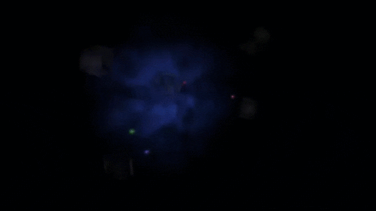

<ion-content [fullscreen]="true">
  <div class="container">
    <!-- Fondo con GIF -->
    <div class="gif-background">
      
    </div>

    <!-- Logo -->
    <ion-img src="../../../assets/icon/Logo.png" style="width: 400px; height: 400px;"></ion-img>
    
    <!-- Botón para ir al login -->
    <ion-fab vertical="bottom" horizontal="center" style="margin-bottom: 40px;">
      <ion-fab-button [routerLink]="['/login']">
        <ion-icon name="chevron-forward"></ion-icon>
      </ion-fab-button>
    </ion-fab>
  </div>
</ion-content>
